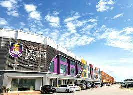
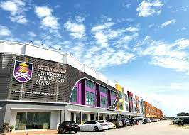

A Education Journey For A Foolish Boys
 

So, for my education, In primary school I were been at Sekolah Kebangsaan Gua Musang in 2008 until 2013. Then, I joined Sekolah Menengah Kebangsaan Tengku Indera Petra 2 in high school and I end up with a good result of SPM. After SPM, I was joined Diploma at UiTM Machang and end up with 3.31 CGPA in my Diploma Administration and that were in 2019 until 2022. After that, Alhamdulillah right now, I get to continued my study in Banchelor Degree at UiTM Kota Bharu and InshaAllah I will do my best to end my banchelor degree with a great result.